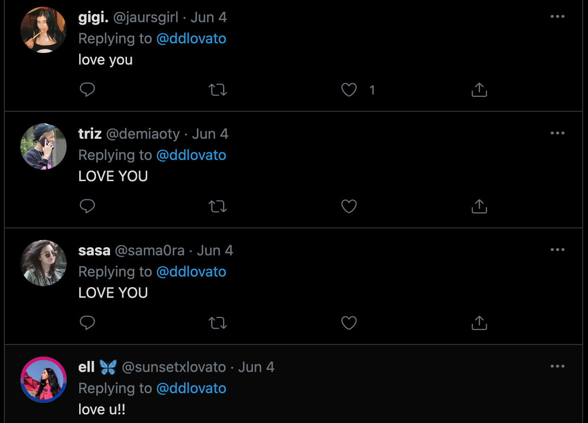

Becoming famous allows for unaccessible funds and voices to be used on causes deemed worthy by the celebrity.
Years ago—I can't remember when or where, so if the reader knows, please contact me—I read something that went like:
One of the best things you can do for humanity is to become rich and famous and use your influence to fund worthy causes.
(This makes the assumption that the person becoming rich and famous is reasonable and altruistic, both of which are not givens, but something that will still be assumed for this post for simplicity's sake.)
I wholeheartedly agree with this idea, and believe it to be especially pronounced and relevant in today's world of parasocial relationships between celebrities and their fans.
Going into a major Twitch streamer's chat can show how high of a pedestal some viewers put the streamer on. Constant messages saying the equivalent of "notice me senpai" flood the chat, with donations popping up on screen with the same message. The same thing can be seen with mentions of celebrities on Twitter (@[celebrity Twitter handle]):
happy birthday brother, you’re a literal walking W, i’ve been a fan since way way way before, back when you were a real CHOC. still loved you then man but so fucking proud of the progress you’ve made as a human...let’s hope jake somehow can follow[Smiling face with tear] @LoganPaul love you brother
and replies to their tweets, despite the tweet being nothing significant:
These people may just be all talk and no walk, as tweeting at someone is essentially free. A better metric would be to look at how much money is spent on the celebrity, especially money in which nothing tangible is received in return (i.e., donations). Yet again, an easy way to observe this is by watching a Twitch stream and its chat. All donations show up there and sometimes even pop up on screen.
In running this idea by a friend, he was skeptical this would work:
It seems risky, too - you have about five words, and huge compression damages ideas
This is not wrong, and both compression and misinterpretation of ideas is inevitable when being transmitted from celebrity to follower.